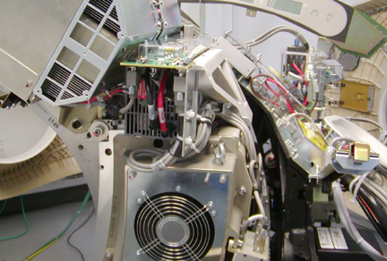
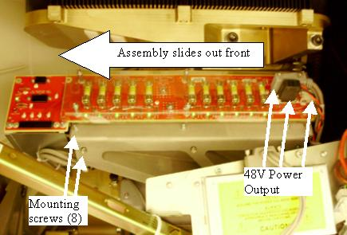
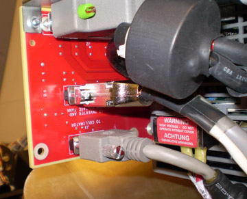

Operating Documentation
Direction 5307452-8EN, Rev# 4
Discovery CT750 HD Service Methods - Adv
Operating Documentation |
| Required Persons | Preliminary Reqs | Procedure | Finalization |
|---|---|---|---|
| 1 | 30 mins | 30 mins | 15 mins |
This procedure defines the steps necessary to replace the gantry rotating side 48V power supply.
| Last Revised: | May 29, 2008 |
| Item | Qty | Effectivity | Part# | Manufacturer | |
|---|---|---|---|---|---|
| Standard service tool kit | 1 | - | - | - | |
| LOTO Kit | 1 | - | - | - | |
| Front Cover Dollies | 1 pair | - | - | - | |
| Item | Qty | Effectivity | Part# | Manufacturer |
|---|---|---|---|---|
| Tywraps | AR | - | - | - |
| Item | Qty | Effectivity | Part# | Manufacturer | |
|---|---|---|---|---|---|
| Power Supply and Fuse Board assembly | 1 | - | - | - | |
| ELECTROCUTION HAZARD | |
| HIGH VOLTAGES PRESENT. | |
| Use proper lockout/tagout procedures before replacing components. See safety menu of Service Document gui for appropriate procedures. |
Remove gantry side covers and disable Axial drive and HVDC from the Service Switch Panel.
Refer to Replacement → Gantry → Enclosure → (Cover Removal Procedures).
Rotate the gantry to position the 48V power supply on the right side of the gantry above the service switch panel and lock gantry in position with rotational lock.
Illustration 1: 48V Power Supply Assembly

| ELECTROCUTION HAZARD | |
| HIGH VOLTAGES PRESENT. | |
| Use proper lockout/tagout procedures before replacing components. See safety menu of Service Document gui for appropriate procedures. |
Turn off the gantry 120 VAC switch on the service panel. Power down the console and use LOTO procedures to make sure gantry power is removed.
Remove the gantry top covers and front cover.
Refer to Replacement → Gantry → Enclosure → (Cover Removal Procedures).
Remove the Power supply output cables on the front and rear of the supply. There are 3 on the front and 3 on the back end. Reference Illustration 2 and Illustration 3. Make note of any other tywraps removed during supply removal for reinstallation later.
Illustration 2: 48V Power supply Side view

Illustration 3: 48V Power Supply Front View - output power connections

Disconnect the AC input cables from the terminal strip on the front of the power supply.
Remove the 8 mounting screws attaching the power supply assembly to the cast frame and slide the supply out the front of the gantry.
Slide the new power supply assembly in from the front of the gantry.
Install the 8 - M4 screws to attach the supply to the cast frame.
Torque the 8 - M4 screws to the following value:
| 2.3 N-m | 1.7 lb-ft | 20.4 lb-in | 23.5 Kg-cm |
Reconnect input and output cabling to power supply assembly as removed. Install Ty-wraps in all locations removed during supply removal. Reconnect cable clamps removed previously.
Torque the 120V input power connections (2 screws) to the following value:
| 1.04 N-m | 0.8 lb-ft | 9.2 lb-in | 10.6 kg-cm |
Restore power to the system and gantry per LOTO procedures.
Check power supply output levels per 48V Power Supply Checks.
Perform a Gantry Rotation Safety Check.
Check Gantry Balance to verify gantry is still balanced.
Run DASTools [Auto Test] to verify that no noise is introduced by the new supply.
Turn OFF the Axial Drive, HVDC and 120 VAC switches on the gantry’s Service Switch Panel.
Install the gantry front, top and left side covers.
Refer to Replacement → Gantry → Enclosure → (Cover Removal Procedures).
Enable 120 VAC HVDC and Axial Drive service switches from the service switch panel. Press the table drives enable button on the lower right corner of the service switch panel.
Install the gantry right side cover.